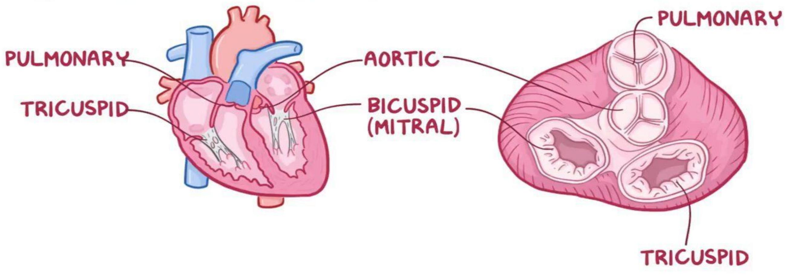

Common Cardiac Disorders
Congestive cardiac failure (CCF) / Heart Failure:
- The inability of the heart to maintain an adequate output of blood from one or both ventricles or It is the inability of the heart to work effectively as a pump.
- A chronic condition that affects the pumping action of the heart muscles
Types of CCF:
- Left sided heart failure
- Right sided heart failure
Left-sided cardiac failure (left ventricular failure)
- Characterized by reduced Left Ventricle output
- Pulmonary congestion predominates when the left ventricle fails, the left ventricle is unable to adequately pump the blood coming from the lungs. The increased pressure in the pulmonary circulation causes fluid to be forced into the pulmonary tissues.
Clinical manifestation of LVF
- Dyspnea, fatigability, tachycardia, anxiety and restlessness
- Orthopnea - difficulty breathing when lying flat
- Paroxysmal nocturnal dyspnoea - sudden attack of orthopnea at night
- Cough that may be dry & non productive but is often moist
- Some times Hemoptysis
- Adventitious breath sounds e.g. crackles
- Decreased kidney perfusion causes oliguria
- Nocturia
- Reduced CO causes confusion, restlessness, anxiety, light headedness and dizziness
RIGHT VENTRICULAR FAILURE (Right sided heart failure)
Right side of the heart is unable to adequately empty its blood volume and hence cannot accommodate all the blood that normally returns to it from the venous circulation. This leads to congestion of the viscera and the peripheral tissues predominates.
Causes:
- Hypertension
- Infective endocarditis
- Coronary heart disease
- Congenital heart disease
Risk factors:
- Alcohol use
- Kidney problems
- Diabetes Mellitus
Clinical features:
Depend on the type of heart failure:
- Coughing due to congested lungs that have excess fluid that leaks into the alveoli
- Shortness of breath on exertion, Irregular heart rate, Increased Heart Rate - palpitations
- Fatigue and weakness, hepatomegaly
- Pleural effusion, Edema of the lower extremities when standing, Leg pains and swelling - pitting
- Sudden weight gain from fluid retention in the abdominal cavity ascites
Investigations
- Physical examination
- Echocardiogram
- CXR
- Urea and electrolytes
Management
Aim is to remove causative factor n reduce work load of the heart:
- Prop up the patient
- Oxygen 100%
- Diuretics - furosemide to reduce fluid accumulation
- Angiotensin-converting enzyme (ACEs) e.g. Captopril, enalapril etc to reduce BP
- Aminophylline - bronchodilator
- Vasodilators e.g. nitroglycerine
- Digitalis-digoxin to increase contractility
Management ct...
- Spironolactone as a potassium sparing drug
- Nutrition-low salt diet, low cholesterol diet
- Edema - elevate lower limbs, measure weight daily
- Life style changes - maintain healthy body weight and Smokers to quit.
Complications
- Uremia - poor kidney functions
- Hypokalemia - drugs
- Hyponatremia
- Impaired liver function
- Arrhythmias
- Pleural effusions
- Cardiogenic shock
Nursing care
- Bed rest - increase kidney blood flow
- Advice on diet- Law salt intake, avoid alcohol and smoking and fluid retaining drugs e.g. NSAIDS
- Treat cause
- Prop up in semifowler position
- Give easily digestible food
- Promote some ambulation
- Maintain Input output chart and daily weighing to assess signs of fluid overload eg orthopnea
- Monitor vital signs Examining skin turgor and mucous membrane for dehydration
Rheumatic heart disease
- Rheumatic heart disease is a complication of acute rheumatic fever.
- It is inflammation of the endocardium.
- It is a condition in which the heart valves have been permanently damaged by rheumatic fever
Causes:
- Streptococcal pyogenes affect the throat and if not treated, it develops to rheumatic fever which then cause Rheumatic Heart Disease
- It takes 2-4weeks after the streptococcal infection
- There is usually a production of antibodies against your own tissues
- Risk is higher with repeated episodes of acute rheumatic fever.
Diagnosis
- Should be suspected in any child with a previous history of rheumatic fever who presents with heart failure / is found to have a heart murmur.
- Throat culture
Clinical features
- Fever
- Pain in the joint
- Involuntary muscle movement
- Non itchy rash - (erythema marginatum)
Management
- Long term antibiotics parenteral - monthly benzathine benzyl penicillin at 600,000 iu IM every 3-4 weeks or oral penicillin v at 250 mg twice a day, ASA ORALLY
- Patient teaching on the disease process and treatment
- Early treatment of streptococcal infection is important by using penicillin drugs
- Investigations-Blood culture to rule out streptococcal pyogene bacteria
- Maintaining of vital signs 4hourly especially temperature
- Analgesics such as paracetamol
Complications
- Valve stenosis, with varying degrees of regurgitation, atrial dilatation, arrhythmia and ventricular dysfunction.
- Also affects the bony joints, producing polyarthritis
- Leucocytes accumulates in the in the affected tissue and form nodules
- Rheumatic myocarditis and pericarditis respectively.
- Endocarditis has serous results e g valve stenosis. Regurgitation , heart failure
Valvular heart disease
Valvular heart disease is any cardiovascular disease process involving one or more of the four valves of the heart (the aortic and mitral valves on the left side of heart and the pulmonic and tricuspid valves on the right side of heart.
The heart consists of 4 chambers--2 atria (upper chambers) and 2 ventricles (lower chambers). Blood passes through a valve as it leaves each chamber of the heart. The valves prevent the backward flow of blood. They act as one-way inlets of blood on one side of a ventricle and one-way outlets of blood on the other side of a ventricle.
The heart valves
VALVULAR HEART DISEASE
DAMAGE or a DEFECT to ONE or MORE of the VALVES
Pathophysiology
Heart valve disorders can arise from 2 main types of problems:
- Regurgitation (or leakage of the valve). When the valve(s) do not close completely, it causes blood to flow backward through the valve. This reduces forward blood flow and can lead to volume overload in the heart.
- Stenosis (or narrowing of the valve). When the valve(s) opening becomes narrowed, it limits the flow of blood out of the ventricles or atria. The heart is forced to pump blood with increased force to move blood through the narrowed or stiff (stenotic) valve(s).
Causes
The causes of heart valve damage vary depending on the type of disease present, and may include the following:
- Changes in the heart valve structure due to aging
- Coronary artery disease and heart attack
- Heart valve infection
- Birth defect
- Syphilis (a sexually-transmitted infection)
- Myxomatous degeneration (an inherited connective tissue disordent weakens the heart valve tissue)
Signs and symptoms
- Chest pain
- Palpitations caused by irregular heartbeats
- Fatigue, Dizziness
- Low or high blood pressure, depending on which valve disease is present
- Shortness of breath
- Abdominal pain due to an enlarged liver (if there is tricuspid valve malfunction)
- Leg swelling
Diagnosis
- Chest xray
- Echocardiogram
- MRI
- Cardiac catheterization
- Exercise tests or stress tests. Different exercise tests help measure your activity tolerance and monitor your heart's response to physical exertion
Management
- Lifestyle modification
- Control of hypertension
- Surgical repair or replacement of the valves
Mitral Valve Prolapse
- A portion of mitral valve balloons back in the left atria and remains open during systole
- Causes regurgitation of blood to left atrium
- It rarely progresses well. May result to sudden death
- More in women than men
Clinical features
- May be asymptomatic
- Fatigue regardless of activity, lightheadedness, Dizziness
- Syncope, Chest pain for some days, Palpitation
- Anxiety, Shortness of breath
Assessment
- Extra heart sound (mitral click)
- Murmur of mitral regurgitation is heard
- Echocardiography
Management
- Direct control of symptoms
- Anti - Arrhythmia
- Calcium blockers or beta blockers for chest pain that does not respond to nitrates
- Mitral repair or replacement
- Reduce caffeine
Nursing care
- Educate the patient on the symptoms
- Emphasis importance of prophylactic antibiotics before surgery
- Diet control balance
- Activity
- Reporting symptoms
- Avoiding precipitating factors
Mitral regurgitation
- Back flow of blood from left ventricle to left atrium during systole
- Due to problem with one or more leaflets, chordae tendinae, annulus or papillary muscles.
- Left atrium stretches to accommodate the blood. The lung becomes congested and Right Atrium also become strained.
Clinical features
- Chronic may be asymptomatic
- Severe CCF
- Dyspnoea, fatigue, weakness,
- Palpitation and shortness of breath in exertion
Assessment
- Echo
- Pulse maybe regular or irregular due to fibrillation
- Systolic murmur heard as high pitched
Management:
- Same as for CCF
- Valvoplasty- surgical repair
Mitral stenosis
- Narrowing of the Mitral Valve obstructing blood flow from Left Atrium to Left Ventricle due to rheumatic endocarditis
- Valve leaflets thicken, Left Atrium hypertrophies leading to pulmonary congestion hence Right Atrium failure
Clinical Features:
- Dyspnoea, fatigue, hemoptysis, cough, repeated respiratory infection
Mitral stenosis ct...
- Assessment- as Mitral Regurgitation
Medical management - Antibiotic prophylaxis
- Anticoagulants, valvoplasty to open the valves
Aortic regurgitation
Backflow of blood from aorta to Left Ventricle during diastole due to inflammatory lesions of the valves
May be due to: endocarditis, congenital anomalies, diseases like syphilis, aneurism, failure of replaced valve
Causes:
- Ventricle hypertrophy to accommodate blood
- Increase in Systolic pressure
- Peripheral arterioles dilate reduces diastolic pressure
Aortic regurgitation ct...
Clinical features:
- Palpitation - visible/ palpable at temporal and carotid artery
- Dyspnea, fatigue then signs of Left Ventricular failure
- Widened pulse pressure (i.e. systole - diastole)
- Water-hammer pulse - the pulse strikes the palpating finger sharply & quickly then collapses
Management:
- Valvoplasty, valve replacement is the treatment of choice
- Antibiotic prophylaxis before tooth extraction
Aortic stenosis
- Narrowing of the aortic valve maybe due to infection e.g. Rheumatic disease
- This leads to Left Ventricule hypertrophy
- It may remain asymptomatic for long time
- Definitive management is Valvoplasty or valve repair
Coronary Heart disease
- It is a progressive atherosclerotic disorder of the coronary arteries that result in narrowing or complete occlusion of the vessel lumen
- Atherosclerosis - build up of fats, cholesterol on the artery walls.
Predisposing factors:
- Family history, Gender (males more than females), Diet, sedentary lifestyle i.e. smoking
- Aging, Hypertension, Diabetes Mellitus,
- Obesity, Increased levels of bad cholesterol
Coronary Heart disease ct...
Clinical features:
- Chest pain
- Light headedness
- Increased heart rate
- Shortness of breath
- Sometimes nausea
Management:
- Admission is important
- Administer oxygen [measure SPo2]
- Frequent monitoring of vital signs especially heart rate, BP.
- Balance between activity and rest
- Treatment - nitro-glycerine under the tongue
- Pain killer - morphine orally
- Reduce modifiable risk factors e.g. obesity, smoking.
- Investigations - ECHO to asses for dysrhythmias
Infective endocarditis
- Infection of the heart endothelium or valves (endocardium)
- Develops in people with heart structural disorders, common in elderly
- Can follow invasive procedures that causes bacteremia especially those involving mucosal surface
- Also common in IV drug abusers
Pathophysiology
- Involve direct invasion by bacteria (streptococci, staphylococci, pneumococci, enterococci)
- The infection causes deformity of the valves and the chord tendinae.
- Also caused by fungi and rickettsia
Causes/Risk factors
- Streptococcus viridans [50-60%] of the cases, Staphylococcus aureus [30%] of the cases
- History of bacterial endocarditis
- Prosthetic heart valves
- Mitral valves prolapse or thickened leaflets, Hypertrophic cardiomyopathy, Congenital malformation e.g. ventricular septal defects, patent ductus arteriosus - blood flows from a high pressure zone to a low pressure zone eroding the endocardium, platelets adhere to the affected area and form a vegetation
- Acquired Valvular dysfunction, Immunosuppressive medication, People who abuse I.V drugs
Possible route of entry of microorganisms
- Through oral route during dental procedures
- Through skin rashes, lesions, or abscesses
- Through genitourinary route
- Through surgery or invasive procedures
Clinical features
- The features due to toxic effect of the infecting agent, valve damage or embolization of the vegetative fragments
- Malaise, anorexia, weight loss, back and joint pain, cough
- Intermittent Fever, chills, night sweats, fatigue
- Splinter hemorrhages (reddish-brown streaks or lines) under finger nails and toe nails.
- Patechiae on the conjuctiva and mucous membrane
- Heart murmurs and cardiomegaly
- Headache, stroke
- Cardiac murmurs
Management
Aim is to eradicate the causative agent:
- Involve IV antibiotic. penicillin for six weeks is the drug of choice.
- Fungal endocarditis managed using antifungal eg amphoterin B
- ECHO-show evidence of endocardial involvement
- Surgical management for repair or replacement
- Rest balanced with activity.
complications
- Heart failure
- Stroke--- CVA
- Valvular stenosis and regurgutation
- Myocardial damage
- Embolism
- Hemodynamic deterioration
Prevention
- Prophylaxis before and sometimes after invasive procedures e.g. Dental extraction, tonsillectomy, GIT surgery, Prostatic surgery, Incision and drainage, Vaginal hysterectomy, Urethral catheterization - Patient given 2 g amoxicillin.
- Nurses to ensure hygiene and aseptic techniques used during invasive procedures
- Catheters removed as soon as they are not necessary
Nursing management
- Temperature monitoring-indicates effectiveness of therapy
- Monitor vital signs
- Assess signs of organ damage e.g. stroke, meningitis, heart failure, glomerulonephritis.
- Assess all invasive line for signs of infection e.g. redness, warmth, swelling, tenderness, drainage..
- Iv drug administration
- Emotional support to the patient and family
- Educate the family on prevention strategies
- Pre and post operative care to the patient.
MYOCARDIO INFARCTION (MI)
- Irreversible cellular injury and necrosis
- Major branch of coronary artery blocks, leads to sudden death
- Reduced blood flow due to atherosclerosis, embolus or thrombus.
- No adequate perfusion - also called heart attack, and coronary occlusion
Pathophysiology
- Cardiac cell withstand ischemia for 20 min before necrosis begins
- Contractile function stops in the area of necrosis
- Degree of altered function depends on the area of the heart affected
- Most affects left ventricle.
- Time is of essence to improve the quality of life
- Described according to where they occur - Inferior, anterior, lateral and posterior infarction
Causes
- Coronary occlusion
- Major reduction in blood circulation in certain areas of the heart
- Coronary artery dissection
- Coronary emboli
- Coronary artery spasms
- Hemorrhage into atherosclerotic plaque
- Systemic arterial hypotension - anemia, hypotension, Thyrotoxicosis, psycho stimulants
Clinical features
- Chest Pain - cardinal sign, +++ most severe one has ever experienced, substernal, accompanied with nausea vomiting and diarrhea and dizziness
- Pain present despite medication
- May radiate to the back, jaw, left arm not relieved by rest
- Palpitations
- Breathlessness
- Syncope
- Bradycardia
- Anxiety due to fear of impending death
Clinical features ct...
- Fever due to inflammation process
- Decreased urine output due to cardiogenic shock
- Pulmonary edema
- Sudden death due to ventricular fibrillation and asystole.
- Death occur within 1 hour
- Initially BP is high due to impaired myocardial dysfunction, then drops due to reduced CO
- Left ventricular failure
- Pulsus alternus (alternating strength of pulse)
- 3th heart sound S3, Murmurs due to incompetent valves
Investigations
- ECG
- Chest X-ray
- Blood lab - Urea creatinine and electrolytes
- ESR-erythrocyte sedimentation rate. May rise
- Glucose, may rise Lipids levels
- Serum enzymes changes due to damage of cardiac cells. Enzymes leak into circulation
Management
- First aid (pre-hospital care)
- Any person presenting with spontaneous angina or angina for the first time should be managed of acute MI
- Aim - relief pain
- Restoration of myocardial flow through
- CPR
- Oxygen
- Prevention of shock and complications
Hospital management
- Admit in cardiac care unit (ccu)
- Correct arrhythmias and give thrombolytics eg streptokinase 1.5 m.u in 100 mls NS to decrease mortality
- Reassure the patient, do defibrillation
- Give Oxygen
- Put on IV line
- Strong analgesics- diamorphine-5-10mg IV
- Glycerine trinitrate 0.5 mg sq
- Stool softeners
- Oral ASA $75-300 \mathrm{mg}$
Hospital management ct...
- Heparin 5000iu until mobility is evidence
- Monitor ECG
- Detect and treat complications
- Continuous TPR and BP
- Input and output chart monitoring
- 24 hr bed rest
Surgical management
- Percutaneous coronary intervention
- Coronary artery bypass grafting
Complications:
- Arrhythmias- causes 5-10% death
- Pain, Atrial fibrillation-digoxin is the treament of choice
- Thrombosis, Hypertension, Heart failure
- Cardiogenic shock, Pericarditis
- Rupture of interventricular septum
Cardiomyopathy
- Cardiomyopathy, or heart muscle disease, is a type of progressive heart disease in which the heart is abnormally enlarged, thickened, and/or stiffened. As a result, the heart muscle's ability to pump blood is less efficient, often causing heart failure and the backup of blood into the lungs or rest of the body. The disease can also cause abnormal heart rhythms
- Cardiomyopathy is a disease of the heart muscle that makes it harder for your heart to pump blood to the rest of your body Or Cardiomyopathy is a group of diseases that affect the heart muscle.
Cardiomyopathy ct...
Cause:
- Idiopathic
- Infectious disease
- Genetic conditions
- Systemic connective tissue diseases
- Long-term high blood pressure
- Nutritional deficiencies,
- Cardiovascular disease
- Heart tissue damage from a previous heart attack
Risk factors:
Modifiable Risk Factors:
- Tobacco use
- High blood cholesterol or triglyceride levels
- Lack of exercise
- Obesity
- Stress
Non-modifiable Risk Factors:
- Family history of heart disease
- Older age
- Diabetes
High blood-pressure
Classification:
- Dilated Cardiomyopathy (DCM): This is the most common type of cardiomyopathy. In this disorder, the left ventricle becomes enlarged (dilated) and can't effectively pump blood as the pumping ability of heart's main pumping chamber (left ventricle) becomes less forceful.
DCM Causes:
- Primary - Idiopathic
- Secondary: Electrolyte abnormalities, Endocrine abnormalities, Hypertension, Infectious causes, Ischemia, Nutritional abnormalities, Valvular heart disease
Classification ct...
- Hypertrophic Cardiomyopathy: This type involves abnormal thickening of the heart muscle, particularly affecting the muscle of the heart's main pumping chamber (left ventricle).
- Restrictive Cardiomyopathy: The heart muscle in people with restrictive cardiomyopathy becomes rigid and less elastic, meaning the heart can't properly expand and fill with blood between heartbeats.
- ARRHYTHMOGENIC RT-VENTRICULARDYSPLASIA: In this type of cardiomyopathy, the muscle in the lower right heart chamber (right ventricle) is replaced by scar tissue. This can lead to heart thy problems.
Symptoms:
- Breathlessness
- Swelling of the legs, ankles and feet
- Bloating of the abdomen due to fluid buildup
- Cough while lying down
- Fatigue
- Irregular heartbeats
- Chest pain
- Dizziness
Diagnostic Evaluation:
- Chest X-ray
- Echocardiogram
- Electrocardiogram (ECG)
- Treadmill stress test
- Cardiac catheterization
- Cardiac magnetic resonance imaging (MRI)
- Cardiac computerized tomography (CT) scan
- Blood tests
Genetic testing or screening
Medical Management
- Vasodilators (These drugs acts as blood vessel dilator) - Nitrates
- Beta-Blockers (Decrease work load in heart) - Propranolol 20-40 mg
- Calcium channel blocker (They improve coronary blood flow) Nifedipine, Verapamil
- Anticoagulant Drugs - Heparin
- Opiate Analgesic (For reduce pain) - Morphine sulphate
- Thrombolytic Drugs - Streptokinase, Urokinase
Surgery for Cardiomyopathy
- Septal Myectomy -A surgeon removes part of the thickened septum that's bulging into the left ventricle.
- Heart Transplant - A heart transplant is a last resort treatment for people who have end-stage of heart failure
Complications:
- Heart failure
- Blood clot
- Valve problems
- Cardiac arrest and sudden death
Prevention:
- Avoiding the use of alcohol
- Controlling high blood pressure, high cholesterol
- Eating a healthy diet
- Getting regular exercise
- Getting enough sleep
- Reducing stress.